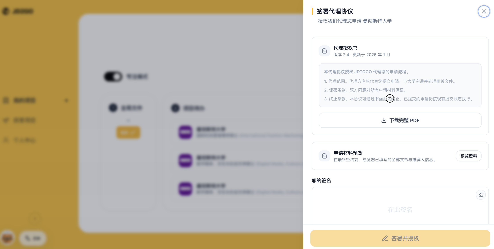

我的核心判断是：JD2GO 现在最像一个 AI 前置的留学代理服务入口，而不是一个真正的学生自助申请工具。这个方向并非一定错误，但产品必须诚实地选择定位：要么成为 AI-native agency，要么成为 agency operating system，要么重做为用户可控的 DIY copilot。现在的问题是，它用自助产品的体验获客，却在最后一步落到代理授权。
我完整体验的路径包括：从“我要留学”开始，填写英国硕士、浙江财经大学、市场营销、均分 85、IELTS 6.5；获得 UCL、曼大、利兹的 Reach/Match/Safe 推荐；选择曼大 International Fashion Marketing；进入项目工作台；生成个人陈述；填写推荐人信息；最终进入代理协议签署。代理协议明确授权 JD2GO 代理申请准备、网申填写、材料上传、申请递交、补件沟通和进度跟进。
Bottom line: JD2GO 的产品价值不在“AI 替学生 DIY 留学申请”，而在“用 AI 把学生信息采集、项目初筛、材料初稿和代理签约流程做成一个更顺滑的获客与交付系统”。
用户是谁
这个产品表面服务学生，但实际最受益的用户可能是留学机构和顾问。学生端有价值，但价值集中在早期探索和材料起草；真正持续的效率收益在顾问端，因为它把高频、重复、低信任度的信息采集和项目初筛自动化了。
1. 完全托管型学生和家长
这类用户希望“我不懂，也不想管，帮我做完”。他们的核心需求不是 AI，而是信任、确定性、责任归属和可解释的进度。JD2GO 对他们的优势是流程更透明、材料进度可视化、文书初稿更快；劣势是如果最后仍然是代理授权，和传统中介的交付边界没有本质区别。
这类用户愿意付费，但不一定因为 AI 付费。他们为“有人负责”付费。产品如果面向这群人，应该强调人机协作、审核机制、服务 SLA、申请责任边界，而不是只强调智能推荐。
2. 半 DIY 型学生
这类用户有一定信息检索能力，愿意自己判断项目，但需要工具降低材料、进度和文书压力。JD2GO 的推荐、项目卡、专注模式和文书生成对他们有帮助；但代理协议会造成心理反差：用户以为自己在使用工具，结果被引向“授权你替我申请”。
这类用户最适合的产品不是代理服务，而是可控 copilot：官方项目数据、材料清单、文书审校、deadline 管理、网申辅助、提交前复核。只要最后一步必须签代理协议，JD2GO 对这群人的吸引力会下降。
3. 高能力 DIY 型学生
这类用户本身能查项目、读官网、写材料、校验网申。他们未来会越来越多地使用通用 AI agent、浏览器控制和文档工具来完成申请。对他们来说，JD2GO 只有在数据更准、流程更专、审核更可靠、成本更低时才有必要。
4. 留学顾问和机构
这是目前最自然的强用户。顾问需要快速拿到学生背景、生成初筛方案、维护材料任务、催推荐人、准备文书初稿、推进签约和授权。JD2GO 的体验正好覆盖这些痛点。换句话说，它更像“顾问工作台 + 学生门户”，不是纯学生工具。
产品合理性
留学申请是一个适合 AI 参与的流程：信息分散、规则复杂、材料重复、用户焦虑高、错误成本高。JD2GO 把流程拆成 intake、推荐、项目详情、材料、文书、推荐人、代理协议，这个骨架是合理的。
它的亮点在于把“选校”和“申请推进”放在同一条链路里。很多工具只做项目搜索，很多中介只靠顾问口头解释。JD2GO 至少让用户看到：我为什么被推荐这个项目，我现在有哪些材料没完成，我下一步该做什么。
做得好的地方
- 新用户路径足够轻，能快速从背景输入进入推荐结果。
- Reach / Match / Safe 的表达清楚，符合学生和家长的决策习惯。
- 项目详情信息密度较高，截止日期、学费、语言要求、申请要求和进度在同一侧栏。
- 个人陈述生成体验有价值，三道选择题后能产出可编辑英文初稿。
- 专注模式把全局材料和项目待办拆开，方向是对的。
核心问题
最大问题不是功能不够，而是产品承诺不清楚。用户点击“开始申请”时，以为要进入申请；实际上进入的是材料准备。材料准备完成后，最终动作不是“我自己提交”，而是签署代理协议，授权 JD2GO 代理申请。

这导致三个后果。第一，学生端会觉得产品在后段突然变成中介。第二，DIY 用户会觉得控制权被拿走。第三，机构端虽然会喜欢这个流程，但产品如果公开定位为学生 AI 工具，就会产生信任错位。
商业定位
JD2GO 的商业方向有三种可能，每一种都可以成立，但不能混在一起。
路径 A：AI-first agency
这是当前产品实际最接近的方向。用户端用 AI 完成背景收集、选校推荐、文书初稿和材料任务，最后签署代理授权，由 JD2GO 或合作顾问完成网申和沟通。
这个方向没问题，但要承认自己是代理服务，而不是伪装成 DIY 工具。增长重点应该是更低价格、更快交付、更透明进度、更标准化质量控制。商业上可以收服务费、项目包、文书包、申请递交费或成功节点费。
路径 B：留学机构 OS
这是我认为最强的方向。JD2GO 可以作为中介机构的操作系统：学生门户负责信息采集和材料上传，顾问后台负责项目推荐、文书生成、推荐人管理、授权签署、网申进度和交付质检。
这个方向的用户和价值更匹配。机构愿意为效率、标准化、交付管理、顾问产能和获客转化付费。AI 推荐和文书生成不是卖给学生的“魔法”，而是卖给机构的“产能工具”。
路径 C：DIY application copilot
这是最有想象力但最难的方向。它要求产品不签代理授权，不代替用户控制账号，而是让用户自己监督 AI 完成检索、材料校验、文书修改、网申辅助和提交前检查。未来通用 agent 会持续压低这个方向的护城河。
如果 JD2GO 选择这条路，就必须建立专用优势：官方项目数据更准、申请规则模板更完整、材料校验更可靠、用户控制权更强、价格远低于中介。
商业建议：短期不要硬做纯 DIY。更合理的策略是 B2B2C：把学生端做成透明门户，把顾问端做成高效率工作台，把代理授权放在明确的“托管服务”分支里。
方向判断
产品方向本身没有错，错在当前表达同时想吃三类用户：想托管的学生、想 DIY 的学生、想提高效率的顾问。三者需要的承诺不同，冲突集中体现在最后的代理协议。
对完全托管型学生，代理协议是合理的，但产品应该提前说明“这是 AI 辅助的代理申请服务”。对半 DIY 和高能力 DIY 用户，代理协议是负担，应该提供不授权代理也能完成的工具路径。对机构用户，代理协议和材料管理是刚需，但需要顾问后台和权限管理，而不是只靠学生端页面。
因此，我不会说 JD2GO 应该停止做。相反，它应该更清楚地选择：主产品做“AI 留学代理操作系统”，学生自助只是入口；或者拆出一个无代理合同的 DIY 版，避免用户以为被转化进中介服务。
UX 与信任问题
这类产品的 UX 不是单纯好不好看，而是用户是否知道自己正在授权什么、完成了什么、下一步谁负责。
1. 按钮命名要符合真实动作
“开始申请”实际进入材料准备，应该改为“开始准备材料”。只有进入邮箱注册、官方账号注册、网申递交时，才使用“进入正式申请”。
2. 进度口径必须统一
个人陈述提交后，专注模式显示任务减少，但项目详情仍显示申请材料 0/4。这会直接破坏信任。项目卡、专注模式、项目详情和材料计数必须使用同一套状态。
3. 推荐信表单是关键阻塞
称谓、职位、关系字段看似可输入，但需要匹配隐藏选项。输入 Dr.、Associate Professor、任课老师时出现 No matches。真实学生会在这里卡住，顾问代填也会浪费时间。
4. 文书生成需要解释和复核
三道情境题能生成完整 PS，但用户不知道选择如何影响文书，也不知道哪些内容来自事实、哪些内容是 AI 推断。高风险申请材料必须提供事实标注、待确认点和人工复核状态。
5. 代理授权要提前透明
代理协议不是普通确认页，而是商业关系和责任边界的切换点。它应该在用户进入“托管申请”前明确出现，而不是作为流程终点突然出现。
建议路线
0-30 天：修正信任和流程
- 把流程拆成 DIY、协助申请、全托管三种模式。
- 重命名“开始申请”，统一项目进度和材料计数。
- 修复推荐人表单，所有下拉项可见并支持中英文搜索。
- 在代理授权前加入明确说明：谁提交、谁接收通知、谁承担哪些责任。
30-90 天：强化顾问工作台
- 增加顾问端：学生列表、项目组合、材料状态、风险提醒、文书版本、递交记录。
- 建立项目推荐的证据结构：硬条件命中、软背景匹配、风险点、补救建议。
- 给每个项目生成 application readiness score，而不是只给录取概率。
90 天后：选择增长模型
- 如果做 B2B：找中小留学机构试点，按顾问席位、学生案例数或申请项目数收费。
- 如果做 B2C agency：公开服务边界和价格，用低价标准化申请包切传统中介。
- 如果做 DIY：砍掉代理协议，做用户可控的申请 copilot，并用订阅或单项目工具包收费。
最终反馈
JD2GO 不是没有价值。它的价值很清楚：降低学生信息采集、项目初筛、材料准备和文书起草的摩擦。它真正的问题是定位不诚实或至少不够清晰。
如果它面向学生说自己是 AI 留学申请工具，但最后要求签代理协议，那么用户会把它理解为“包装得更智能的中介”。如果它面向机构说自己是 AI 留学交付系统，那么当前大部分功能都变得合理。
所以我的建议是：不要把 JD2GO 定义成“替代中介的 AI 工具”。更准确的定义应该是“AI-native 留学申请服务与顾问操作系统”。在这个定位下，它可以增长；在纯 DIY 定位下，它会被通用 AI agent 和更强的浏览器自动化持续挤压。